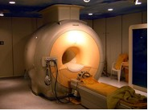
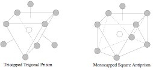
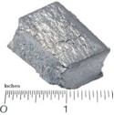
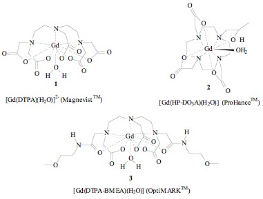
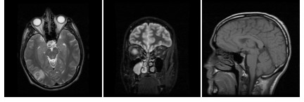
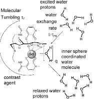

| METALS IN MEDICINE AND THE ENVIRONMENT | |||
| Metals | Magnetic Resonance Imaging | ||
|
Magnetic resonance imaging (MRI) has become one of the most powerful techniques to date in the fields of diagnostic medicine and biomedical research.(1) It is a medical imaging technique most commonly used in radiology to visualize the structure and function of the body and is especially useful in the areas of neurological, musculoskeletal, cardiovascular, and oncological (cancer) imaging.  When coupled with the use of a contrast agent, the images provided by such a technique are greatly enhanced enabling for the much improved ability to distinguish from different tissue types.(2) The MRI contrast agents in clinical use today are predominantly gadolinium based, and consist of a central paramagnetic gadolinium (III) ion chelated to an 8-coordinate water soluble ligand and a water molecule, to form a 9-coordinate complex.(3) The geometries of such complexes are found to be tricapped trigonal prism (TTP) or capped square antiprism (CSAP) with the former TTP geometry being most favorable.(3) These geometries are depicted below in Figure 2.  Figure 2. 9-Coordinate Geometries Adopted by Gadolinium Contrast Agents (3)  Gadolinium(III) is a toxic heavy metal with seven unpaired electrons. It has a size comparable to Ca(II) which can lead to the disruption of crucial Ca(II)-required signaling in the body.(5) The key reason for the perfectly safe use of gadolinium (III) ions in contrast agents (even when administered on the gram scale) is attributed to the fact that the gadolinium ion is strongly bound within its ligand and possesses zero observable dissociation from its ligand within the body.(3) This strong binding exists despite the presence of numerous chelating substances in the body such as phosphates, citrates and transferrin which allows the gadolinium complexes to be excreted from the body with the gadolinium(III) ion still intact.(3) Some examples of MRI contrast agents are shown in Figure 4.(3) MagnevistTM (1, Figure 4) was the first drug to be approved as a MRI contrast agent (in 1988) and is produced and marketed by Schering, Germany.(3) It contains a highly paramagnetic gadolinium(III) central atom chelated to a 8-coordinate diethylenetriamine pentaacetic acid (DTPA) ligand and to one water molecule to form a di-anionic complex. It is also marketed under the generic name of gadopentetate dimeglumine.  ProHanceTM (2, Figure 4) contains a gadolinium (III) ion chelated to an 8-coordinate 1,4,7,10-tetraazacyclododecane-1-(2-hydroxypropyl)4,7,10-triacetic acid (HP-DO3A) ligand and to a solvent water molecule to form a neutral complex. It is produced by Bracco, Italy and goes by the generic name of gadoteridol.(3) OptiMARKTM (3, Figure 4) is a drug in clinical trials for evaluation as a potential extracellular MRI contrast agent.(3) It is produced by Mallinckrodt, USA and also is makes use of a highly paramagnetic gadolinium(III) metal center. The gadolinium is bound to an 8-coordinate diethylenetriaminepentaacetic acid-N,N'-bis(methoxyethylamide) (DTPA-BMEA) ligand and one water molecule. Since the approval of Magnevist in 1988 it has been projected that over 30 metric tons of gadolinium has been injected into millions of people around the world.(3) In 1999, about 30% of all MRI exams made use of gadolinium contrast agents and it has been predicted that this percentage has increased to near 50% to date.(7) MRI evolves pulsing the target with radio frequency (RF) in the presence of an externally applied magnetic field to induce spin flip excitation of water molecule protons.(8) When the protons relax back to their ground state, energy is released back into the surroundings while being recorded, to eventually give rise to the MR image. There are three tissue parameters that determine the intensity (brightness) of the generated signal and thus image contrast between different tissue types namely:
MRI scans that target T1 relaxation times are called T1-weighted scans and scans that target T2 relaxation times are called T2-weighted scans.(8) In T1 weighted scans, a short repetition time (time span between two successive excitations) of less than 600 ms is used to create contrast in the MR image.(8) Tissues having short T1 relaxation times are able to relax to the ground state to produce a signal but, tissues that have longer T1 relaxation times do not have time to relax between successive pulses and are kept in the excited state generating little signal. Tissues with short T1 relaxation times thus appear bright in the MR image in contrast to tissues with low T1 relaxation times.(8) The T2-weighted scans make use of an echo time (period of time between excitation and measurement of MR signal).(8) T2 relaxation times are much shorter that T1 relaxation times. The larger the echo time the greater will be the image contrast. This contrast is achieved because tissue possessing short T2 relaxation times (shorter than echo time) fully relax before signal acquisition starts and tissue possessing longer T2 relaxation times (longer than echo time) are still relaxing at the comencment of signal acquisition and thus generates a signal.(8) Tissue having longer T2 relaxation times thus appear bright while tissues having short T2 relaxation times appear dark in the MR image.  The gadolinium containing contrast agents such as those shown in Figure 4 reduce T1 and T2 relaxation times by roughly the same amount and are best visualized using T1-weighted scans.(3) Tissue containing higher concentrations of contrast agent will have heightened intensity in the MR images due to the decreased T1 relaxation time that it induces in the protons contained by surrounding water molecules. This also allows for the use of shorter repetition times as the contrast agent more rapidly restores the temporary excitation back to the ground state in between pulses.(7) These gadolinium(III) contrast agents function by rapidly transferring the excitation contained in the water protons to the highly paramagnetic gadolinium(III) central ion. The water exchange rate (1/τm, Figure 6) is thus of importance in MRI contrasting agents with high (1/τm) rates being desired. Other factors important to the efficiency of the contrast agents is the degree of molecular tumbling and number of inner sphere coordinated water molecules as shown in Figure 6. Increased contrast efficiency has been show when molecular tumbling is reduced (by increasing molecular weight) and when more inner sphere water molecules are present. Gadolinium(III) contrast agents rarely contain more than one inner sphere coordinated water molecule due to the compromised stabilty of the resulting complex with fewer bonds to the chelating ligand.(3)  References
Image Sources MRI instrument Author: Allan Prior |
|||
| Topics | |||
|
|||